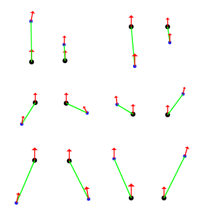

Motivated by applications such as automated visual surveillance and video
monitoring and annotation, we are interested in constructed cognitive vision
systems capable of interpreting the high level semantics of dynamic scenes.
In this work, we present a novel approach for automatically inferring
models of object interaction that can be used to either
(i) interpret observed behaviour or (ii) predict future behaviour within a
scene.
Previous work has generally selected in advance which types of behaviour to
model/recognise. However the aim of this work is not to predetermine these activities but to learn them automatically. For this reason a data driven approach
is taken where models of interactive object behaviour are learned through observation without assumption of prior knowledge. This removes the need for costly hand crafted knowledge whereas learning discovers stochastic models of behaviour that reflect the structure of sample behaviours.
Experiments have been performed within the traffic monitoring domain, however
the proposed method is applicable to the general surveillance task.
Our to learning models of object interactions involves first a process of inferring discrete and abstract representations (or symbols) of primitive object interactions. Effectively, we learn a set of qualitative spatial relations relevant to the dynamic behaviour of the domain.

Figure 1: Learnt primitive interactions - traffic domain example. The two dots represent pairs of close vehicles (distinguished by the size of the dot -- the larger dot being the reference vehicle). The arrows show their direction of movement and the connecting vector their relative orientation and distance. These patterns represent typical``midpoints'' as result of clustering the input data into n different conceptual ``regions''.
For more details see:
A. Galata, A. G. Cohn, D. Magee and D. Hogg, Modeling Interaction Using Learnt Qualitative Spatio-Temporal Relations and Variable Length Markov Models, In Proc. European Conference on Artificial Intelligence (ECAI), ECAI'02,, July 2002 ( .pdf).Last update was on February 2003